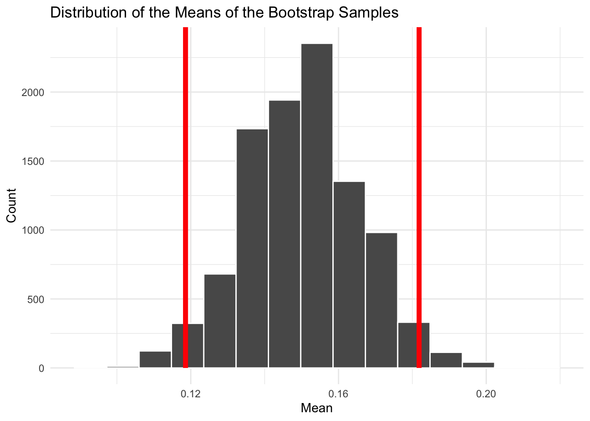

Complete the following before diving into this module:
Install the tidymodels package. This includes the infer and rsample packages, which we will use to simulate sampling and construct confidence intervals.
install.packages("tidymodels")
Install the openintro package, which contains the dataset we will use in this module: install.packages("openintro")
Think about sampling. What does the word “sample” mean to you? What is a sample you have encountered in your own life? What larger group was that sample meant to represent?
Overview
In this module, we will explore the concept of statistical inference, which is the process through which we use samples to make informed guesses about a broader population. Since we rarely have access to data from every individual or item in a population, we must rely on samples to estimate quantities of interest, like proportions or averages.
But sampling introduces uncertainty. What if your sample isn’t typical? How much might your estimate differ if you sampled again?
We’ll build an understanding of what it means to sample from a population, how repeated sampling leads to a sampling distribution, and how to quantify uncertainty using standard errors and confidence intervals. We explore two ways to estimate uncertainty: 1) using mathematical formulas; and 2) using a computational approach called bootstrapping.
Along the way, you’ll simulate sampling, compute estimates, and build confidence intervals with R. By the end, you’ll be able to explain what a confidence interval means and construct one from data using the infer package.
Let’s begin by understanding what sampling is, and why it’s essential to doing data science.
What is Sampling?
Imagine trying to learn something about a large group of people, like how many hours college students sleep each night. You could try asking every student on Earth, but that’s not very practical. Instead, you look at a smaller group that hopefully represents the whole or, in other words, you take a sample.
This is the core idea of sampling: selecting a subset of individuals from a larger population to learn something about the population as a whole. The population is the full group you’re interested in studying. The sample is a smaller subset of the population that you actually observe.
Related to this, we have two important concepts: a parameter and a statistic. A parameter is a true, but usually unknown, characteristic of the population (like the actual average sleep time). A statistic is the number you compute from your sample (like the sample average sleep time).
Your goal as a data scientist is to use statistics to make educated guesses about parameters. This process is what we refer to as inference.
The Target Population and Sampling Frame
In practice, it’s important to define your target population—the group you want to learn about. Then you have to find a sampling frame, which is the actual list or method you use to select your sample.
For example:
Target population: All high school students in the U.S.
Sampling frame: Students enrolled in a particular school district’s database
Often, the sampling frame doesn’t perfectly match the target population. This mismatch can introduce sampling bias, which we’ll revisit in a future module.
Now that you understand what sampling is, let’s explore what happens when we repeat the sampling process.
Sampling Distributions and Uncertainty
If you take a single sample from a population and compute a statistic—say, the average—what do you get? One answer. But what if you took a different sample? Would your answer be the same? Probably not.
This variability is the heart of sampling distributions: the idea that every time you take a sample and compute a statistic, the result can change. If you repeat the process many times, those statistics themselves form a distribution.
Activity: Sampling with M&Ms
Imagine you have a big bowl of M&Ms in front of you. You reach in and grab 20 at random. Count how many are blue and calculate the proportion. Now, put them all back and grab 20 more. Do it again. And again.
Each time you grab a handful, you’re taking a sample. Because you’re putting them back in the bowl each time, this is called sampling with replacement. You’ll notice the proportion of blue M&Ms changes slightly from sample to sample.
Try this at home if you have M&M fun packs where each fun pack represents a random sample of M&Ms. Record the proportion of blue M&Ms (your sample statistic) in a CSV file. This is your sampling distribution. You can even upload your CSV to R and use your data to create a histogram of the proportions.
Now take an average of all of your recorded sample statistics. How close does it come to the actual known population parameter (the proportion of M&Ms that are blue)?
This simple activity mirrors what we mean by repeated sampling and helps you build intuition for how a sampling distribution works.
Standard Error: Measuring the Spread
The spread of this sampling distribution is called the standard error (SE). It tells us, on average, how much a statistic varies from one sample to another. A smaller SE means more precise estimates while a larger SE means more variability from sample to sample.
Standard errors depend on both the sample size and the variability in the data. Bigger samples tend to produce smaller standard errors.
Understanding this variability is key to making smart inferences. Next, we’ll learn how to use this idea to construct confidence intervals—a powerful way to express uncertainty in our estimates.
Estimating Uncertainty with Confidence Intervals
A confidence interval gives us a range of values within which we believe the true population parameter likely falls. It’s based on the idea of the sampling distribution and its standard error.
When we interpret a confidence interval we say that we are “X% confident” that the true parameter lies within the interval. For example, if we say we are 95% confident that the true proportion of M&Ms that are blue is between 0.2 and 0.3, it means that if we repeated our sampling many times, about 95% of those intervals would contain the true proportion.
There are two distinct ways to calculate confidence intervals: using mathematical formulas or through computational methods like bootstrapping. Most of our focus in this course is going to be on the computational approach, or bootstrapping, but it’s important to understand the math behind confidence intervals as well.
Math-Based Confidence Intervals
Confidence intervals can be calculated using formulas based on the sampling distribution of the statistic. The most common type is the normal approximation method, which assumes that the sampling distribution of the sample proportion is approximately normal when the sample size is large enough.
Here’s the basic formula for a confidence interval:
\[
\text{Estimate} \pm z \times \text{Standard Error}
\]
The \(z\) value depends on how confident you want to be:
For a 95% confidence level, \(z \approx 1.96\)
For a 90% confidence level, \(z \approx 1.645\)
Example: Confidence Interval for a Proportion
Suppose we survey 100 people, and 64 say they like pineapple on pizza. Our sample proportion \(\hat{p}\) is 0.64.
We are 95% confident that between 54.6% and 73.4% of the population likes pineapple on pizza.
In the next section, we’ll explore a more flexible approach: bootstrapping.
Estimating Uncertainty with Bootstrapping
Bootstrapping is a resampling technique that involves repeatedly drawing samples, with replacement, from the observed data to estimate the sampling distribution of a statistic. Bootstrapping is an example of a nonparametric approach to inference. Nonparametric means that we do not assume a specific shape or distribution for the population (like normality). Instead of relying on formulas, we use the data we have to approximate what repeated sampling might look like.
Bootstrapping is a computational method for estimating the variability of a statistic when you only have one sample from the population. It works by simulating what might happen if you could sample again and again—from your existing data.
To understand the idea, imagine that your original sample is the “best guess” we have of the population. If we randomly resample with replacement from that sample, we can simulate what other samples might have looked like.
By computing the same statistic (e.g., a proportion or mean) from each resample, we build up a bootstrap distribution. From this, we can estimate standard errors and construct confidence intervals.
There are a number of good reasons to use bootstrapping:
It doesn’t require formulas or assumptions about the shape of the distribution;
It works well even with small sample sizes or skewed data;
It’s easy to implement using R and the infer package.
Worked Example Using openintro and tidymodels
Let’s use a dataset from the openintro package. In this Pew Research survey, 506 Russians were asked whether they believe their country tried to interfere in the 2016 U.S. presidential election. We’ll recode the responses into a binary variable.
# A tibble: 1 × 2
mean sd
<dbl> <dbl>
1 0.150 0.358
This tells us the observed proportion who believe Russia tried to influence the election.
Next, we will create the bootstrap distribution:
library(tidymodels)set.seed(66)boot_dist<-russiaData|>specify(response =try_influence)|>generate(reps =10000, type ="bootstrap")|>calculate(stat ="mean")
Now, let’s use get_ci() and visualize() from the infer package to compute and visualize the confidence interval for our bootstrap distribution:
# Get confidence intervalci<-boot_dist|>get_ci(level =0.95)# Visualize bootstrap distribution with CIboot_dist|>visualize()+shade_ci(ci, color ="red", fill =NULL)+labs( title ="Distribution of the Means of the Bootstrap Samples", x ="Mean", y ="Count")+theme_minimal()

This plot shows the bootstrap distribution of the mean proportion of Russians who believe their country interfered in the election. The shaded region marks the 95% confidence interval.
Warning
The 95% confidence interval was calculated as (lower_bound, upper_bound). Which of the following best describes the correct interpretation?
95% of the time the percentage of Russians who believe that Russia interfered is between these values.
95% of all Russians believe the probability of interference is within the interval.
We are 95% confident that the proportion of Russians who believe that Russia interfered in the 2016 election is between these values.
We are 95% confident that the proportion of Russians who supported interference is between these values.
Code
# The answer is (c) We are 95% confident that the proportion of Russians who believe that Russia interfered in the 2016 election is between these values.